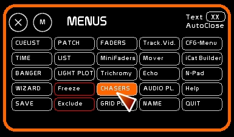
Le module des chasers est très particulier dans son ergonomie. Il est issu d'un regard sur notre pratique et de la limitation de la plus part des consoles de théâtre. Généralement, lorsque l'on encode un chaser dans une console, on programme une sorte de séquenciel tournant dans un sens ou l'autre. Modifier les temps à la volée, l'ordre des pas, ou les circuits rendus est quelque chose de généralement impossible en Live.
Le module Chasers de WhiteCat est donc dessiné pour permettre cette action en direct sur un chaser. Il s'inspire des pratiques musicales et des séquenceurs.
Comme les autres contenus dynamiques, un chaser s'affecte dans le dock d'un fader pour pouvoir être rendu sur scène.
La fenêtre des Chasers permet d'agir sur tous les paramètres d'un chaser. Il s'agit donc d'une fenêtre d'édition, de modification en live d'UN chaser. Vous pouvez avoir plusieurs chasers tournant et les déclencher depuis les commandes des Faders dédiés aux chasers dockés, sans avoir besoin de passer par la fenêtre d'édition.
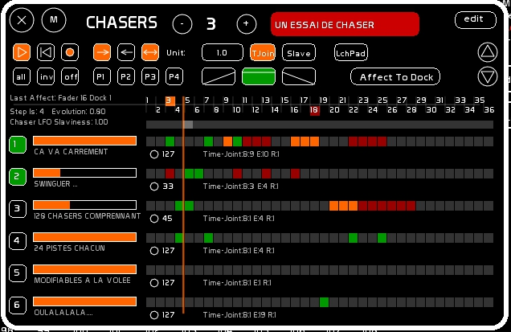
Navigation dans les 128 chasers de WhiteCat:
Quand la pastille EDIT est enclenchée, vous pouvez:
Un chaser peut être stocké dans plusieurs docks. Cependant, concernant le pilotage de sa vitesse, celle-ci est pilotée par l'accéléromètre du dernier Fader auquel le chaser a été affecté.
On peut visualiser à quel fader a été affecté en dernier le chaser sur la ligne de la time line.
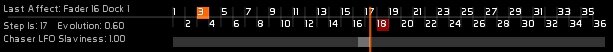
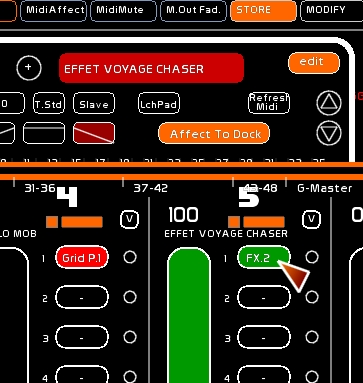
Lorsqu'un chaser est affecté à un dock, et que ce dernier est sélectionné, les commandes de PLAY, SEEK at BEG et LOOP apparaissent en dessous de l'accéléromètre, permettant de piloter soit à la main, soit en midi ce Chaser particulier.
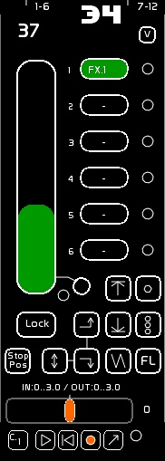
A noter que charger dans un Fader un chaser donne accès depuis celui ci à quelques commandes:
L'autolaunch quand il est enclenché permet de démarrer un chaser en montant le fader. Et de le stopper et seeker en mettant le fader à 0.
Chaque Chaser comprend 36 pas.
Chaque Chaser a son unité de temps spécifique pour l'éxécution de ses pas: un pas ( une case) peux donc avoir une durée de 1 seconde, ou bien de 5 ou 32 secondes. C'est le TimeUnit.
On active ou non des opération dans les cases des pas ( Fade In, Stay, Fade Out) sur la base de cette TimeUnit.
Un Chaser s'éxécute d'un pas de départ à un pas d'arrivée.
Ici dans l'image montrée le pas de départ ( en orange ) est le pas 3. Le pas d'arrivée est le pas 18.
La timeline montre un curseur qui correspond à la position du chaser dans son exécution.
Il n'y a qu'un seul curseur par timeline. Il y a donc qu'une seule vitesse / une seule position de curseur, par chaser.
Vous pouvez vous déplacer dans les pas manuellement en clickant dans la barre grise.
Les pas de début et de fin sont déplaçables aussi à la souris.
De gauche à droite:
Le TimeUnit est donc le temps d'exécution d'un pas pour le chaser sélectionné.
Pour éditer ce temps:
Le mode de calcul du temps concerne les opérations de même natures, contigües.
Dans le module Chaser, chaque case de chaque piste peut recevoir un évènement des types suivants:
Si on prend l'exemple suivant: trois Fade In contigüs, avec un TimeUnit de 3 secondes.
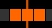
Si le mode Time est en mode standard ( T.Std), le déroulé se passe ainsi:
Si le mode Time est en mode Join ( T.Join) nous avons:
La jonction des temps est calculée uniquement pour les opérations de même nature et contigües.
Si la pastille slave est enclenchée, le temps du TimeUnit est affecté par l'accéléromètre du dernier fader auquel il a été affecté ( information présente sur la time line, à gauche).
Quand l'accéléromètre est complètement à gauche, le time unit est accéléré au maximum. Quand il est complètement à droite, le time unit est à sa valeur de base.
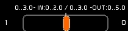
A gauche de la timeline:
Pour chaque piste vous avez un retour des fonctions de TimeJoin, vous donnant:
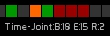
Chaque Chaser comprend 24 pistes. On peut affecter des circuits pour chaque piste.
Exemple:
La piste 1 comprendra les circuits 25 et 48 à 75% + le 54 à Full.
La piste 2 comprendra les circuits 30 et 31 à 55%.
En activant une action sur la time line ( Montée, Maintient ou Descente ), vous enclencherez l'allumage des circuits affectés à chaque piste, proportionnelement au niveau de celle-ci.
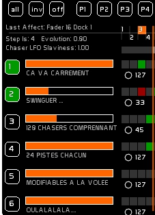
Chaque piste a un ON/OFF: vous pouvez ainsi activer ou désactiver la sortie dans le chaser d'une piste.
En ON le bouton de piste est VERT.
Vous pouvez varier l'intensité de sortie de chaque piste. Le niveau apparait sur la droite, et s'exprime de 0 à 127. Avec une surface motorisée, vous pouvez renvoyer le niveau en midi out ( petite pastille ronde).
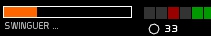
Version 0.8.2.2 et supérieures: MidiMute (local)
Une deuxième pastille ( plus petite) permet de muter le midi affecté à ce contrôle, et de recaler en manuel le niveau du fader.
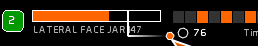
Vous pouvez naviguer dans les 24 pistes via les boutons UP DOWN à droite:
Pour éditer une piste [EDIT] doit être enclenché.
Vous pouvez enregistrer un ou plusieurs circuits dans une piste, à des intensités différentes:
Vous pouvez relier à une piste le contenu d'une mémoire. Le rafraichissement est fait automatiquement si vous la modifiez dans le séquenciel.
Pour savoir ce que contient une piste:
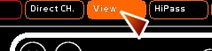
Ls circuits apparaissent encadrés en vert, avec leurs niveaux.
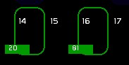
Elles permettent de mettre en ON/OFF un ensemble de pistes:
Vous pouvez enregistrer dans 4 presets les états des ON/OFF de vos pistes:
Pour rappeler l'un des 4 presets, le clicker.
Pour effacer un preset de pistes:
Vous devez être en [EDIT].
Sélectionner une des quatre opérations possibles:
Puis clicker une case d'une piste pour affecter l'opération.
Si vous reclickez avec le même opérateur cette case, vous enlevez l'action.
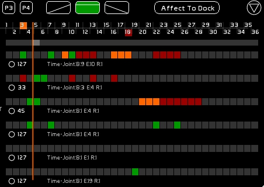
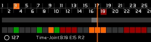
Cette piste contient les circuits 1 à 50% et 2 à 80%. Le time Unit est en 3 secondes.
Exécution du chaser entre le pas 3 et le pas 18 en mode TimeStandard:
En mode TimeJoin:
Petite subtilité: Si vous désirez que 1 et 2 ne descendent pas à zéro, il faut encoder dans une autre piste un état en stay de 1 et 2 sur les pas où les niveaux de ces circuits ne doivent pas descendre.
Quasiment toutes les commandes de la fenêtre Chaser sont affectables en midi: On/Off, niveaux, commandes, etc…. Voir le Synoptique d'affectations midi. Si vous n'êtes pas familiarisé avec le midi, prenez le temps de lire d'abord la page Configuration Midi et Affectations Midi.
Si vous désirez envoyer à la volée des états dans une piste, celà se fait par la grille Lauchpad.
Il faudra activer le mode launchpad pour visualiser et déplacer la grille dans l'espace des pistes.
Cette grille peut faire 8 boutons par 8 boutons maximum.
Vous pouvez définir le nombre de lignes ( 8 x1, 8 x2, 8×5 etc…) dans le [CFG MENU] > MIDI > Options.
Le launchpad est un périphérique Midi avec une matrice de 8×8 boutons et 16 boutons additionnels. Ces boutons sont des triggers, cad de simples ON/OFF sans information de vélocité.
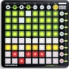
Cette matrice est rétro-éclairée par des LEDS. Il y a donc un aller retour entre l'information envoyée par la pression d'un bouton, et le logiciel qui renvoie l'état lumineux à la grille.
Pour que l'aller retour fonctionne il faut que vous renvoyez du midi out vers le Launchpad : [MENU CFG] > MIDI > MIDI DEVICES et que l'option de rétro-éclairage soit enclenchée > MIDI OPTIONS.
Si vous désirez utiliser les envois au bouton avec une autre interface ( type BCF2000 ou UC-33), c'est possible. Par contre n'enclenchez pas le rétro-éclairage.
Clicker le mode Launchpad:
La matrice de 8 s'affiche.
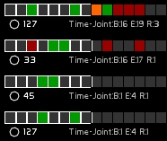
Elle comporte le nombre de ligne défini dans [MENU CFG] > MIDI > OPTIONS.
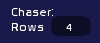
Cette matrice est déplacable via les petites flèches près du mode Launchpad. Ces flèches sont elles aussi pilotables en Midi.
En rétro-éclairage, le curseur du défilement de la Time Line apparait sur la première ligne uniquement, en couleur jaune.
Les codes couleurs des cases dans la grilles sont envoyées aux LEDS, permettant visuellement d'intervenir sans regarder son écran, à la volée.
Le nombre de pistes affichées ( View Chaser Tracks )est défini dans le [CFG-MENU], en page General.
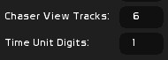
L'affichage du TimeUnit en décimales est paramétrables, pouvant aller jusqu'à 4 chiffres après la virgule. Par défaut, l'affichage de TimeUnit se fait 1 chiffre après la virgule.
Concernant le paramétrage Launchpad:
Vous pouvez définir le nombre de pistes ( lignes) pilotées dans le chaser: cette option se définit dans le [CFG MENU] > MIDI > OPTIONS